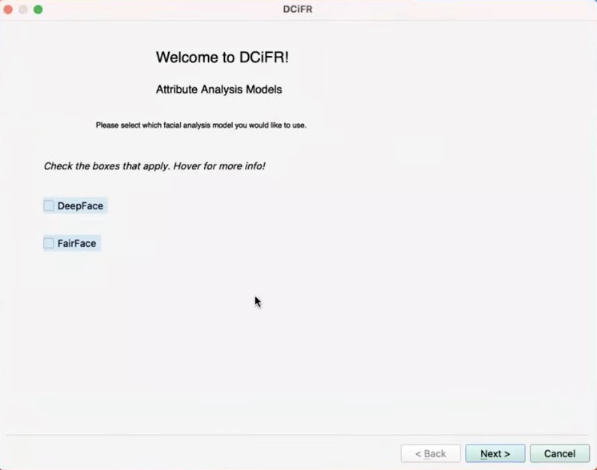
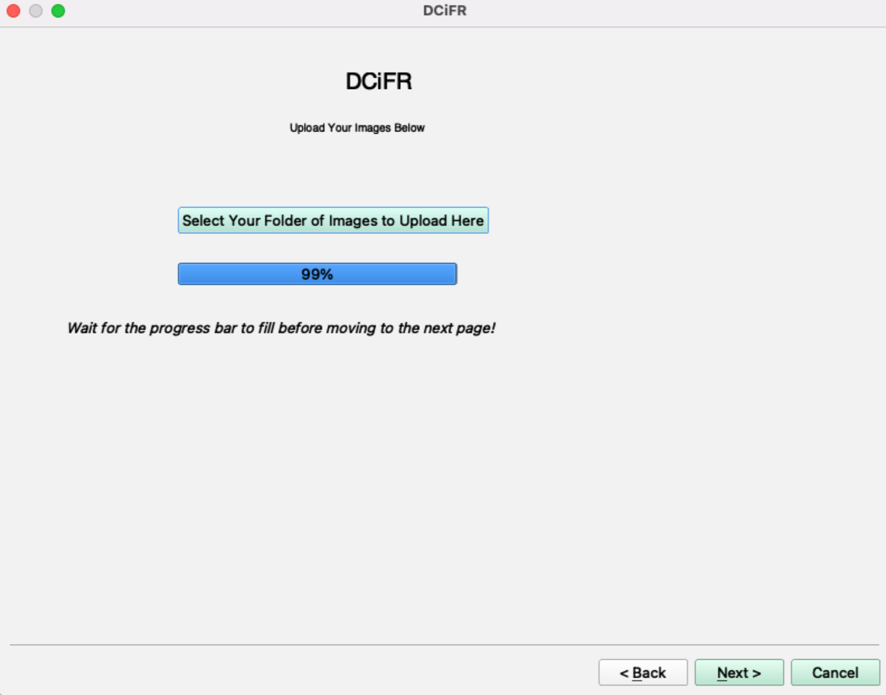

Software Development
As a data analyst, I am a constant user of powerful and complex software. It is extremely important to be well-versed in the world of software development as someone in the tech industry, and I plan to continue to expand my knowledge of computer science throughout my professional career.
Demograhpic Characteristics in Facial Recognition (DCiFR)
 I completed this project in collaboration with Eungang Choi and Erick Axxe at The Ohio State University's Department of Sociology. We worked collaboratively to conduct research and create tools addressing racial and gender discrimination in the world of academia. During our research, we came across two facial recognition packages that allowed us to collect demograhpic information from photographs, attributes that were necessary to our work, but difficult to come across. These packages, DeepFace and FairFace, serve as a bridge between the sociology community and the technical world. We thought that these powerful algorithms should be tools that all researchers could use, no matter what their coding or technical skills might be.
 This is where DCiFR comes in. DCiFR, standing for Demograhpic Characteristics in Facial Recognition, is a graphical user interface coded by myself in Python using Jupyter Notebooks and PyQT5. This interface is available for download on GitHub or PyPi. The interface is easily navigated, allowing users to upload as many photos as they would like, select their desired algorithm and demographics, and download a CSV file with their results. This GUI, along with our conclusions from our research into academic inequality, was presented by myself at the 2022 Population Association of America conference in Atlanta, Georgia, titled: 'Computer Vision and Applications in Social Science Research: Deriving Race and Gender from Photos'.
FURY 3D Visualization Tutorials
During my time working as a software development intern for the Garyfallidis Research Group, I focused my development efforts on FURY, an open-source scientific visualization library created by the team. I helped to edit and add features to the library, including new types of 3D shape visualizations with the help of NumPy and VTK9 libraries. I became very well-versed in the field of 3D visualization development, tools that I take advantage of extremely regularly as a data analyst and scientist.
 As this was my first professional software development experience, I gained very valuable skills in version control and collaborative coding, mastering Git and GitHub by the end of my internship. My main responsibility as a member of the team was to expand the FURY tutorial library for new users. Accessibility is a core part of any well-developed software, and tutorials ensure that new users can easy start using a new tool with thorough and detailed examples to reference. I had to consider not only what kind of tutorials would be the most easy to follow for new users, but also what kind of tutorials new users might want to see.
As this was my first professional software development experience, I gained very valuable skills in version control and collaborative coding, mastering Git and GitHub by the end of my internship. My main responsibility as a member of the team was to expand the FURY tutorial library for new users. Accessibility is a core part of any well-developed software, and tutorials ensure that new users can easy start using a new tool with thorough and detailed examples to reference. I had to consider not only what kind of tutorials would be the most easy to follow for new users, but also what kind of tutorials new users might want to see.
The tutorials I created focused on aerospace visualizations, including mapping planet images to 3D shapes and triggering the movement of planetary and other 3D actors. All three images pictured were tutorials added to the FURY site library, which can be accessed at this link. I think that this experience was foundational to fostering my growth in the field of technology, my passion for creating accessible software tools, and my interest in cutting edge software and data visualization tools.
- Click here to see my Sphere Texture tutorial.
- Click here to see my Animated Sphere Texture tutorial.
- Click here to see my Solar System Animation tutorial.
- Click here to see my Earth Coordinate Conversion tutorial.
- To check out the FURY GitHub page, click here.